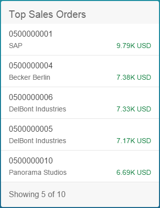
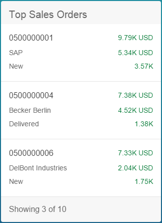
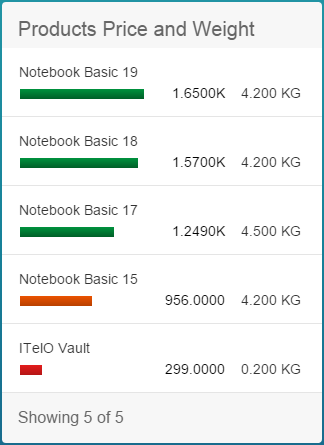
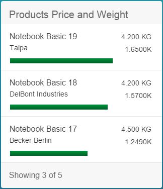

List cards display up to six fields of data in each list item. When creating a list card, you can choose from a number of different types of lists.
Condensed
Extended
Standard
Bar
By default, the fields in the list card are mapped to the com.sap.vocabularies.UI.v1.LineItem annotation. Any other collection of DataFieldAbstract can be used by setting the annotationPath property. LineItem is a collection of DataFieldAbstract records. You can use different com.sap.vocabularies.UI.v1.LineItem annotations for different card instances of the same entity type by using different qualifiers and setting the annotationPath property with the qualifier in the card configuration. For example com.sap.vocabularies.UI.v1.LineItem#Qualifier1.
At runtime, the DataField records are sorted according to the optional Importance (com.sap.vocabularies.UI.v1.ImportanceType) annotation. DataField entries are sorted according to importance and their order of entry.
Number of list items displayed: up to 3.
In this type of list, each list item displays up to six fields. DataField records are displayed on the left side of the line item, and DataPoint records are displayed on the right. If no DataPoint record is defined, or less than three DataPoint records are available, the right side of the line item displays DataField records instead.
Number of list items displayed: up to 6.
|
 |
 |
|
Condensed List Type - Standard Flavor |
Extended List Type - Standard Flavor |
In this type of list, each list item displays up to three fields. Only use this kind of list if you want to display a DataPoint record. The first DataField record is displayed as a title for the line item in the top-left field. The first DataPoint record is displayed as a bar beneath the title, and as a numeric value to the right of the bar. You can also display an additional DataPoint record to the right of the first DataPoint record. The bar can display values as a percentage or as any numeric value.
Number of list items displayed: up to 3.
In this type of list, each list item displays up to five fields. The first DataField record is displayed as a title for the line item in the top-left field. An additional DataField record can be displayed beneath the title. The first DataPoint record is displayed as a bar beneath the DataField records, and as a numeric value to the right of the bar at the bottom of the line item. You can also display two additional DataPoint records to the right of line item, one above the other.
If highlighting (criticality) is defined in the annotation of the DataPoint records, only one will be highlighted in the line item according to the order in which they are displayed.
Number of list items displayed: up to 5.
|
 |
 |
|
Condensed List Type - Bar Flavor |
Extended List Type - Bar Flavor |